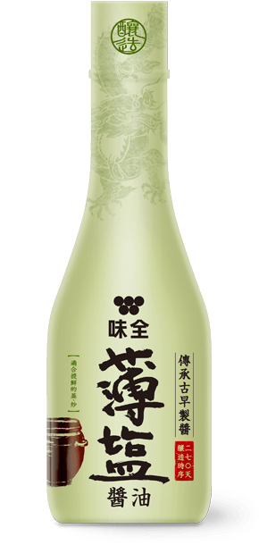

古釀暖心家宴
更多味全柚子風味醬油食譜
柚子風味炸雞
材料
-
去骨雞腿肉400克
-
片栗粉適量
醃料
-
味全柚子風味醬油1.5大匙
-
料理酒1大匙
-
蒜泥1小匙
-
糖0.5大匙
-
薑泥1小匙
作法
Step 1
雞肉切塊放入大碗。
Step 2
將醃料與雞肉抓醃均勻，醃30至45分鐘。
Step 3
醃好的雞腿肉均勻沾裹片栗粉並靜置回潮。
Step 4
用 170℃ 的油溫炸至金黃，起鍋前開大火逼油。
Step 5
食用前，淋上適量味全柚子風味醬油就完成了。
蔥柚醬炸豬排
材料
-
豬排250克
-
蔥4枝
-
麵包粉4大匙
-
雞蛋1顆
-
麵粉2.5大匙
-
高麗菜絲適量
-
鹽少許
-
胡椒粉少許
-
味全柚子風味醬油50ml
作法
Step 1
首先將腰內肉切小塊、拍打後用少許的鹽、胡椒醃製；青蔥切蔥絲備用。
Step 2
接下來依序沾裹麵粉、蛋液、麵包粉。
Step 3
熱油鍋，將步驟二的豬排下鍋油炸。
Step 4
將味全柚子風味醬油稍微加熱後加入青蔥。
Step 5
最後將豬排和步驟四的醬汁一起盛盤就完成了。
蟹肉春雨沙拉
材料
-
粉絲2球
-
小黃瓜45g
-
紅蘿蔔絲30g
-
紅洋蔥30g
-
木耳絲10g
-
火腿片40g
-
蟹肉棒30g
-
雞蛋2顆
-
香菜少許
-
味全柚子風味醬油3大匙
-
白醋1小匙
-
糖2小匙
-
香油1大匙
作法
Step 1
首先將醬料調均勻備用。
Step 2
將粉絲、紅蘿蔔絲汆燙後用冰水泡著備用。
Step 3
將蛋液煎成蛋皮後切絲備用。
Step 4
把所有食材攪拌均勻。
Step 5
最後盛盤後再放上香菜就完成了。